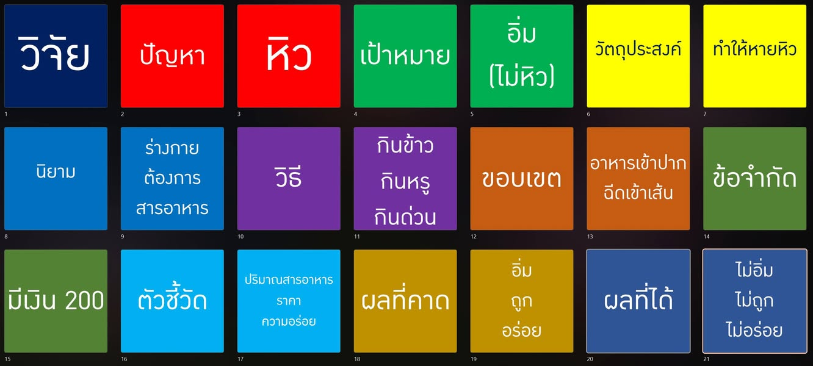

เรื่องเล่าฉบับเต็ม
ความหิว กับ งานวิจัย
เรื่องธรรมดาหนึ่งมื้อช่วยให้เราเห็นว่า ปัญหา เป้าหมาย วัตถุประสงค์ วิธี ขอบเขต ข้อจำกัด ตัวชี้วัด ผลที่คาด และผลที่ได้ ไม่ใช่สิ่งเดียวกัน

ปกติแล้วเวลาเราพูดถึงเรื่องการทำวิจัย ผู้คนมักคิดถึงเรื่องทางวิชาการยาก ๆ ต้องมีการพิสูจน์ มีการทดลอง หรือมีสมการคณิตศาสตร์ แต่ถ้าถอยออกมาดูโครงพื้นฐาน งานวิจัยเริ่มจากเรื่องธรรมดากว่านั้นมาก คือมีสภาพบางอย่างที่เราไม่ต้องการ และเราอยากเปลี่ยนให้เป็นอีกสภาพหนึ่ง
ลองเริ่มจากคำง่าย ๆ ว่า หิว ถ้าเราหิว นั่นคือสภาพที่ไม่ต้องการ จึงเรียกได้ว่าเป็น ปัญหา ส่วนสภาพที่อยากไปให้ถึงคือ อิ่ม หรืออย่างน้อยคือไม่หิว สภาพนั้นเป็น เป้าหมาย ของเรา เพียงเท่านี้ก็เริ่มเห็นโครงของงานวิจัยแล้วว่า เราไม่ได้เริ่มจากเครื่องมือหรือวิธี แต่เริ่มจากสิ่งที่ต้องการเปลี่ยน
หิวคือปัญหา อิ่มคือเป้าหมาย ส่วนกินเป็นเพียงวิธีหนึ่งที่จะพาเราไปจากจุดแรกถึงจุดหลัง
เมื่อมีปัญหาและเป้าหมาย เราจึงเขียน วัตถุประสงค์ ว่า “ทำให้หายหิว” วัตถุประสงค์ไม่ได้บอกเพียงว่าเราจะทำกิจกรรมอะไร แต่บอกการเปลี่ยนแปลงที่ต้องการให้เกิดขึ้น ถ้าเราเขียนวัตถุประสงค์ว่า “เพื่อกินข้าว” เรากำลังเอาวิธีมาแทนผลที่ต้องการ เพราะกินเสร็จแล้วอาจยังไม่อิ่ม กินผิดอย่างอาจป่วย หรืออาหารอาจไม่เหมาะกับคนที่กำลังหิว
คำว่า “หิว” เองก็ยังไม่ง่ายอย่างที่คิด บางคนหมายถึงร่างกายต้องการสารอาหาร บางคนหมายถึงอยากกินเพราะเห็นของอร่อย บางคนเพิ่งกินมาแต่ยังรู้สึกไม่พอ หากเราไม่ตกลง นิยาม ให้ตรงกัน เราจะไม่รู้ว่ากำลังแก้ปัญหาเดียวกันหรือไม่ และยิ่งไม่รู้ว่าจะใช้หลักฐานอะไรบอกว่าปัญหาหมดไปแล้ว คำอย่างคุณภาพ ประสิทธิภาพ ความพึงพอใจ หรือความสำเร็จในงานวิจัยก็มีปัญหาแบบเดียวกัน
เข้าใจแก่นแล้ว? ไปที่ แผนผังทบทวนเร็ว ได้เลย หรือเปิดอ่านรายละเอียดต่อทีละตอนด้านล่าง
อ่านต่อ 1ขอบเขต ข้อจำกัด และตัวชี้วัดต่างกันอย่างไร
สมมติว่าเรานิยามความหิวในบริบทนี้ว่า “ร่างกายต้องการสารอาหาร” วิธีที่คิดได้ก็คือการกิน แต่กินมีหลายแบบ จะกินข้าว กินหรู หรือกินด่วนก็ได้ ตรงนี้คือ ขอบเขต ของทางเลือกที่เราตั้งใจนำมาพิจารณา หากเราเลือกศึกษาเฉพาะอาหารที่กินเป็นมื้อ เราอาจไม่พิจารณาของหวานหรือเครื่องดื่ม แม้สิ่งเหล่านั้นจะหาได้ก็ตาม
ขอบเขตไม่เหมือน ข้อจำกัด ถ้ามีเงินอยู่ 200 บาท นั่นเป็นข้อจำกัดของมื้อนี้ ต่อให้สนใจร้านราคาแพงกว่านั้นก็เลือกไม่ได้ แต่ถ้ามีร้านญี่ปุ่นอยู่ตรงหน้าแล้วเราเลือกพิจารณาเฉพาะอาหารไทย นั่นคือสิ่งที่เข้าถึงได้แต่ตั้งใจไม่นำมาศึกษา การแยกสองเรื่องนี้สำคัญ เพราะงานวิจัยมักอ้างว่า “ทำไม่ได้” ทั้งที่จริงเพียงเลือกไม่ทำ หรือกำหนดงานกว้างจนเกินทรัพยากรที่มี
เมื่อมีหลายวิธี เราต้องมี ตัวชี้วัด เพื่อช่วยเปรียบเทียบ อาหารมื้อนี้มีปริมาณสารอาหารเท่าไร ราคาเท่าไร อร่อยหรือไม่ ใช้เวลาเดินทางและรอนานเพียงใด ทำให้อิ่มแค่ไหน และอิ่มนานเท่าไร คนแต่ละคนอาจให้น้ำหนักตัวชี้วัดไม่เท่ากัน บางคนต้องการอิ่มที่สุดในงบที่มี บางคนยอมอิ่มน้อยลงเพื่อสุขภาพ บางคนมีเวลาเพียงสิบห้านาทีจึงเลือกสิ่งที่เร็วกว่า
อ่านต่อ 2ผลที่คาดอาจไม่ใช่ผลที่ได้ และเหตุใดต้องยอมให้หลักฐานโต้แย้งเรา
ก่อนลงมือ เราอาจมี ผลที่คาด ว่าอาหารทางเลือกหนึ่งน่าจะทำให้อิ่ม ถูก และอร่อย ความคาดนั้นอาจมาจากประสบการณ์ งานเดิม รีวิว หรือคำแนะนำของผู้รู้ แต่ยังไม่ใช่ ผลที่ได้ หลังลงมือจริง เราอาจพบว่าไม่อิ่ม ไม่ถูก หรือไม่อร่อยก็ได้ งานวิจัยที่ดีจึงต้องเปิดพื้นที่ให้ผลจริงโต้แย้งสิ่งที่เราคาด ไม่ใช่ออกแบบทุกอย่างเพื่อยืนยันความเชื่อเดิม
จุดที่มักพลาดคือเราดีใจกับกิจกรรมหรือผลผลิตจนลืมตรวจผลลัพธ์ เราเลือกร้านสำเร็จ สั่งอาหารสำเร็จ จ่ายเงินสำเร็จ กินหมดจาน หรือสร้างระบบ AI แนะนำอาหารสำเร็จ แต่ความสำเร็จเหล่านั้นยังไม่ตอบว่า หายหิวหรือยัง เช่นเดียวกับงานวิจัยที่เก็บข้อมูลครบ สร้างแบบจำลองได้ และเขียนรายงานเสร็จ แต่อาจยังไม่ตอบปัญหาที่ตั้งไว้
เมื่อยังไม่รู้ว่าอาหารใดเหมาะ เราจึงศึกษา เก็บข้อมูล อ่านงานเดิม หรือถามผู้เชี่ยวชาญ การศึกษาช่วยให้เลือกวิธีได้ดีขึ้น แต่ “ศึกษาแนวทาง” ไม่ควรถูกยกเป็นเป้าหมายสุดท้ายโดยไม่มีการเชื่อมกลับมายังปัญหา การค้นเอกสารได้มากหรือให้ AI สรุปข้อมูลได้เร็วเป็นเพียงส่วนหนึ่งของวิธี ไม่ใช่หลักฐานว่าปัญหาถูกแก้แล้ว
งานวิจัยไม่ได้ดีเพราะวิธีดูยากหรือเครื่องมือดูใหม่ แต่ดีเมื่อปัญหา วิธี หลักฐาน และผลที่สรุปเชื่อมกันโดยไม่กระโดดข้ามเหตุผล
ดังนั้น ถ้าจะใช้เรื่องความหิวตั้งคำถามวิจัย เราต้องถามต่อว่า ใครหิว หิวในบริบทใด จะวัดความหิวและความอิ่มอย่างไร ปัจจัยอื่นอย่างการนอน สุขภาพ อาหารมื้อก่อน หรือกิจกรรมระหว่างวันมีผลหรือไม่ งานเดิมด้านความอิ่มตอบคำถามนี้ไปแล้วหรือยัง และข้อมูลใหม่ที่เราจะสร้างช่วยเปลี่ยนการตัดสินใจของใคร
บางครั้งคำตอบที่ซื่อสัตย์ที่สุดคือโจทย์เดิมยังไม่ชัด วิธีที่เลือกยังวัดไม่ตรง หรือสิ่งที่คิดว่าเป็นช่องว่างความรู้อาจมีคนศึกษาแล้ว การลดความมั่นใจ ปรับคำถาม หรือยกเลิกแนวคิดจึงไม่ใช่ความล้มเหลว แต่เป็นผลของการตรวจสอบที่ช่วยไม่ให้เราเสียเวลาใช้วิธีซับซ้อนแก้ปัญหาที่ตั้งผิด
ท้ายที่สุด ภาพทั้ง 21 ช่องไม่ได้เป็นรายการคำศัพท์ให้ท่อง แต่เป็นคำเตือนให้ย้อนถามตลอดงานว่า เราเริ่มจากปัญหาอะไร ต้องการเปลี่ยนไปสู่สภาพใด ใช้วิธีเพราะอะไร ถูกจำกัดด้วยอะไร จะวัดผลด้วยอะไร คาดว่าจะเกิดอะไร และผลจริงอนุญาตให้เราสรุปได้เพียงใด ถ้าตอบคำถามเหล่านี้เชื่อมกันได้ เรื่องง่ายอย่าง “หิว–กิน–อิ่ม” ก็พาเราเห็นหัวใจของการวิจัยได้ครบกว่าการเริ่มจากเครื่องมือเสียอีก